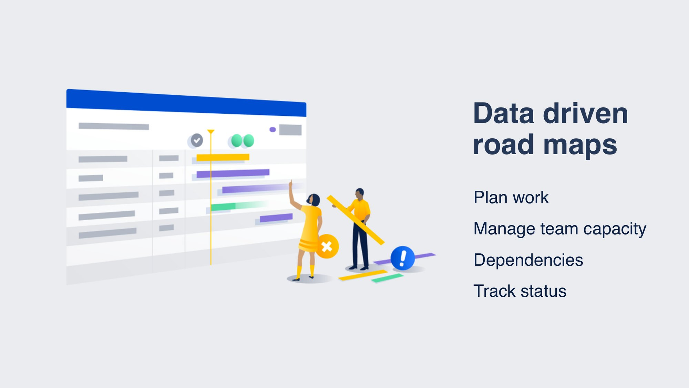
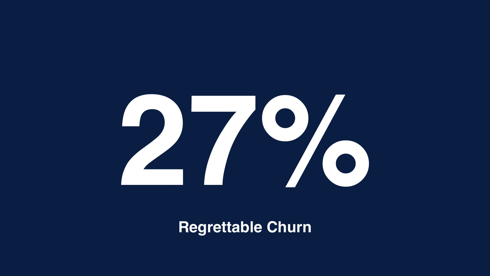
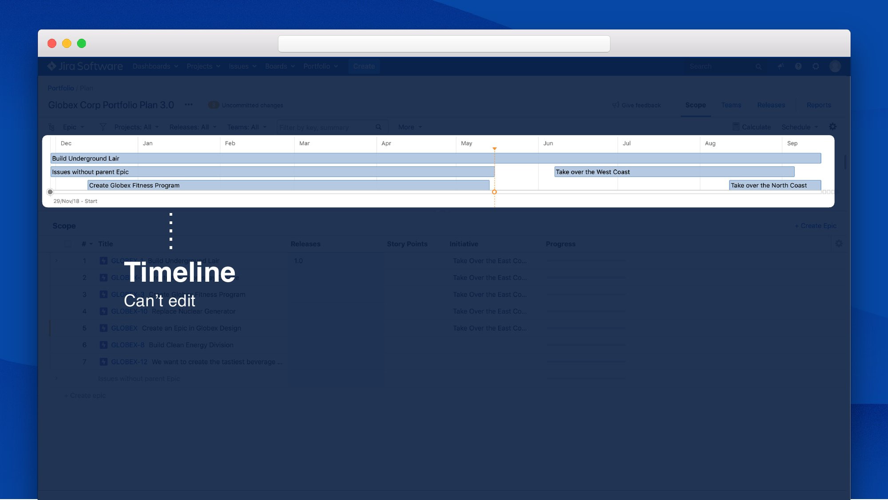
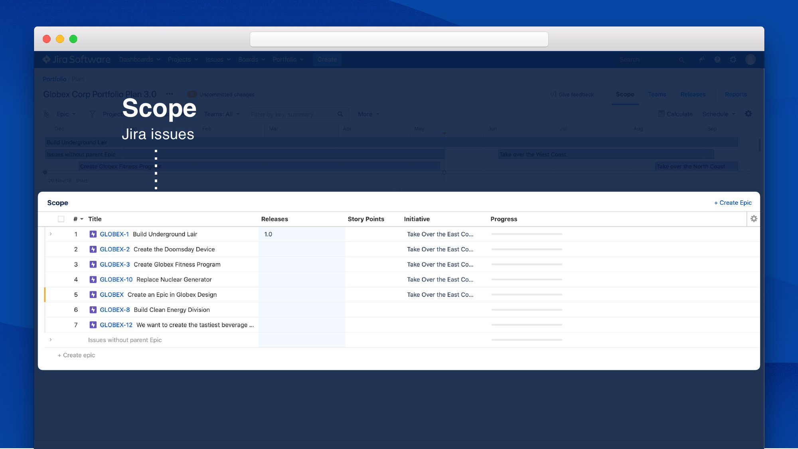
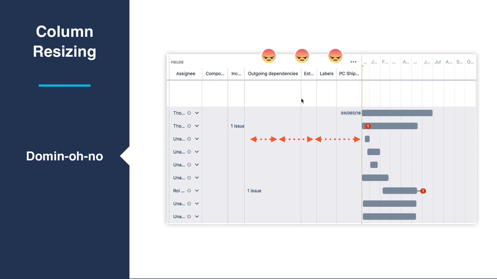
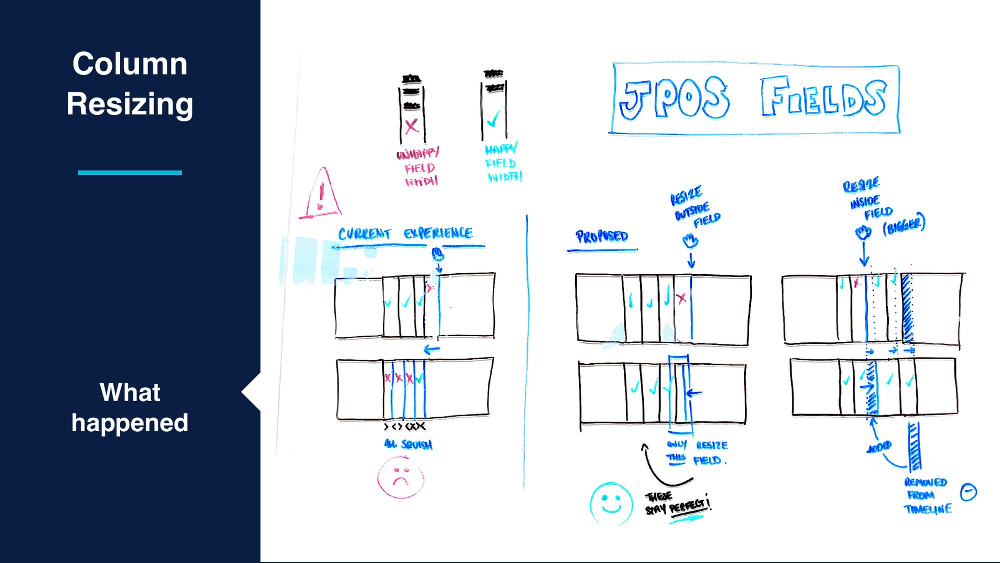
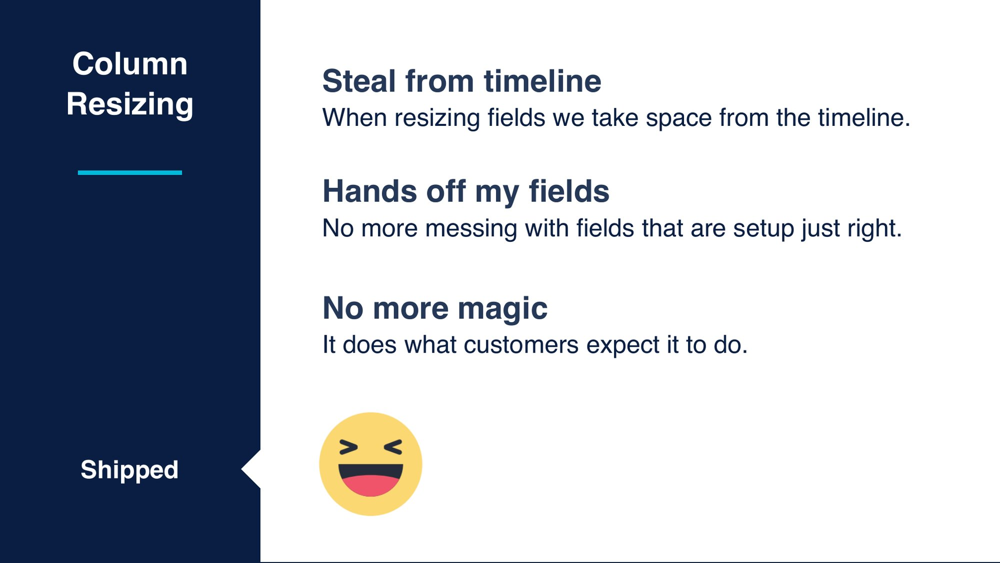
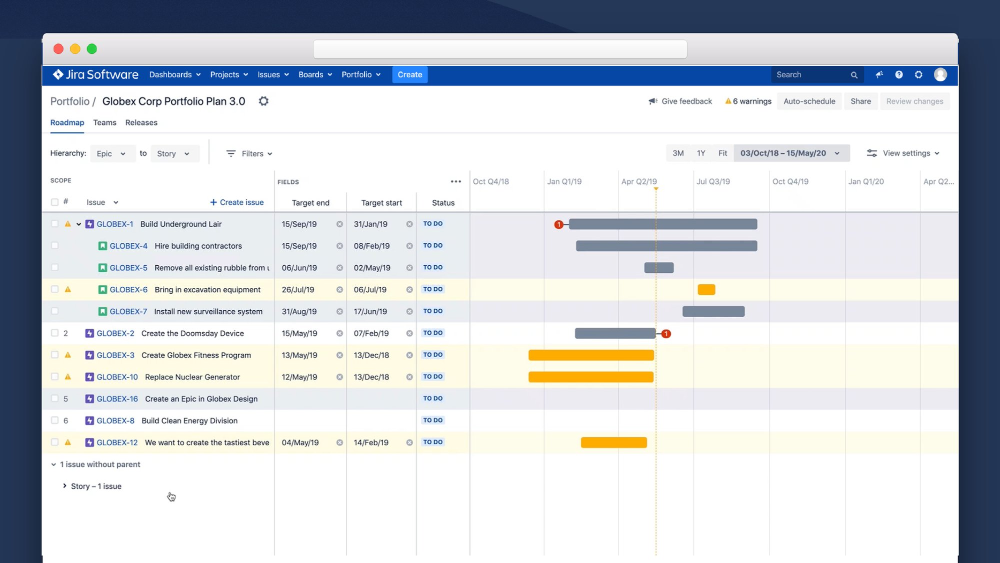

No more magic
When 27% of Portfolio for Jira customers churned, we found a product they didn’t trust. As a product designer on a small, high-performing team, I redesigned two headline features in Portfolio 3.0, which moved planning from a black-box algorithm to plans that people could see, trust and control. Regrettable churn fell from 27% to 8%.
Overview
Atlassian is best known for Jira and Confluence. Portfolio for Jira sits on top of Jira and turns issues into data-driven roadmaps, so teams can plan work, manage team capacity, track dependencies and follow status across their workstreams. Underneath, a scheduling algorithm worked out when everything could get done.

I was a product designer on a small, high-performing Portfolio for Jira team, so I worked end to end across the product: day-to-day feature work, design for a scaled collaboration triad, and facilitating customer research through weekly Product Council immersions that shaped our decisions. This case study focuses on Portfolio 3.0, where I led design on Auto-schedule and field resizing.
My Role
- Feature work: epics and stories, innovation work and bug fixes. Usually two or three pieces of work a sprint, each taking a few days to a few weeks.
- Scaled Collab triad: I led design for the triad that took on the big rocks. These were large projects focused on agile at scale, including reporting and status updates and how teams collaborate in SAFe.
- Research: on a small team, research was part of the design job. I introduced regular usability health checks and ran weekly immersions with our Product Council, a group of our largest enterprise customers.
The Challenge
At the end of FY17 we had 27% regrettable churn. Customers were leaving and not coming back.

We ran several rounds of research with existing customers and the Product Council to understand how enterprises plan and to find the pain points pushing them away.
- The timeline couldn’t be edited, so many customers simply hid it. It was also visually split from the epics and stories it represented.
- The scope section matched what customers expected from a spreadsheet, but limited vertical space meant a lot of scrolling, and there was no way to group work by team or individual.
- Calculate felt like rolling the dice. It ran the scheduling algorithm with no context on why or what would change. It could assign a pile of work to one team with no way to find out why, and people clicked it over and over to keep plans up to date.


The key finding: users found the scheduling algorithm confusing. It was magic that nobody understood, so nobody trusted it. That gave us a design principle, build trust in every interaction, and a product vision: no more magic.
Portfolio 3.0
Research showed that manual planning was a better fit for what our customers needed. Portfolio 3.0 brought a new UI, more space and less magic, and the plan now reads left to right.
- Scope: more vertical space, inline create, drag and drop to rerank issues, and expand or collapse all of the hierarchy. More to see and more to control.
- Fields: we kept the spreadsheet experience customers valued. We shipped without the remove (×) control inside fields at first, then added it back.
- Timeline: it now lines up with the scope section, so each issue and its bar share a row.
From Calculate to Auto-schedule
I led the redesign of the scheduling experience.
- A clearer name: Calculate became Auto-schedule, which says what it does to your plan.
- Control over the inputs: users choose which data the algorithm is fed before it runs.
- Sandbox, then sync: changes are made in a sandbox and synced back to Jira only when you’re ready, so nothing moves without you knowing.
Field Resizing
Portfolio 3.0 first shipped with responsive fields. Columns spaced themselves evenly, which seemed like a good idea. But resizing one column broke the others: widen Outgoing dependencies and Estimates, Labels and PC Ship Date all changed too. Customers who had their view set up just right kept losing it, and the complaints arrived as a steady stream of Jira tickets.

I worked through research, sketching, sparring and prototyping. At Atlassian we spar everything, so I took the problem to our design channel and cross-product sessions in Mural. I looked at how spreadsheets such as Apple Numbers and Excel handle resizing: you adjust one column and everything else stays put. I then built an Axure prototype and had the team try it and flag anything that felt off.

- Steal from the timeline: when you resize a field, the space comes from the timeline.
- Hands off my fields: we no longer touch fields that are already set up just right.
- No more magic: it does what customers expect it to do.


Results & Impact
- Regrettable churn fell from 27% to 8%. Portfolio 3.0 answered the research behind it with an editable, aligned timeline, more space and planning that users control.
- A black box became a tool people could trust. Auto-schedule brought clear naming, user-chosen inputs and a review step before syncing to Jira.
- A top source of complaints was fixed. Field resizing now behaves like a spreadsheet, which ended the domino effect.
- Research became part of the routine through regular health checks and Product Council sessions.
Reflection
Portfolio for Jira taught me that power without transparency erodes trust. The scheduling algorithm was the most impressive part of the product, and also the part customers trusted least. “Build trust in every interaction” became a test I could apply to any decision, from renaming a button to deciding which column gives up space. Often the best choice was to take the magic away and give people the control they already expected.